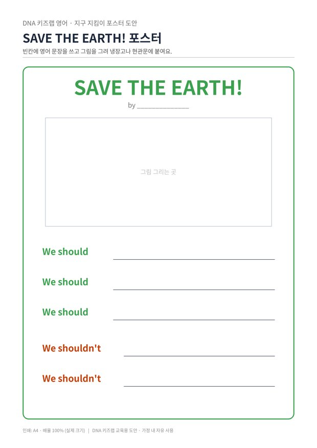

전체 단원 › 실험·활동 › 6학년 2학기 영어
지구 지킴이 포스터

재활용 실험을 해 본 우리 아이가 지구를 지키는 방법을 영어 포스터로 만들어 현관에 붙여요.
40분 · 난이도 ★★☆ 보통
준비물
- 포스터 도안 — 포스터 틀과 단어 상자 (A4 2장)
- 색연필, 사인펜 — 그림과 글씨를 꾸며요
- 재활용 꾸미기 재료 — 병뚜껑, 과자 봉지 조각, 잡지 사진을 오려 붙여요
하는 방법
- 이야기 나누기
우리 집에서 지구를 위해 하는 일, 하면 안 되는 일을 한국어로 먼저 이야기해요. 수학 '재활용품 막대그래프' 결과를 함께 보면 좋아요. - 단어 고르기
도안 2쪽 단어 상자에서 해야 할 일 3개, 하면 안 되는 일 2개를 골라요. - 문장 완성하기
포스터의 We should, We shouldn't 뒤에 고른 표현을 옮겨 써요. 소리 내어 읽으며 써요. - 그리고 꾸미기
빈칸에 지구 그림을 그리고, 재활용 재료를 붙여 꾸며요. - 가족 앞에서 발표
현관에 붙이고 가족 앞에서 영어로 읽어요. 일주일 동안 포스터대로 실천했는지 확인해요.
5~6학년에서는 의무나 충고를 나타내는 should를 배웁니다. DNA 키즈랩의 재활용 활동과 이어지는 주제라, 아이가 직접 겪은 일을 영어로 표현하게 돼요. 포스터처럼 '누군가에게 보여 줄 결과물'이 있으면 쓰기 동기가 크게 올라갑니다.
학교 교육과정 연결
- [6영02-08] 예시문을 참고하여 목적에 맞는 간단한 글을 쓴다.
- [6영02-06] 자신의 감정이나 의견, 경험이나 계획을 간단한 문장으로 표현한다.